15 Open-Source Projects to Replace Popular SaaS Tools & Apps

In today’s fast-evolving digital landscape, businesses and individuals rely heavily on proprietary SaaS tools for essential tasks like website creation, data management, and email marketing. Solutions like Webflow, Airtable, and Mailchimp have long been industry leaders, offering robust capabilities. However, rising subscription costs and the need for greater control and customization are prompting a shift toward open-source alternatives.
This article highlights 15 powerful open-source tools that rival their proprietary counterparts. These tools not only match the capabilities of popular SaaS options but also provide more flexibility, transparency, and cost-effectiveness. From database management to time tracking and event scheduling, these open-source solutions can elevate your workflow while keeping you free from the limitations of costly ecosystems.
Why Open-Source?
Open-source tools give you:
- Freedom to customize the software to fit your exact needs.
- Enhanced security with complete transparency of code.
- RCost savings, as most tools are free or significantly cheaper than SaaS subscriptions.
- Community support, with users contributing to improvements and features.
1.Webstudio
Category: Web Builder
Open Source Alternative to: Webflow
Webstudio is an intuitive, open-source design tool for building responsive websites visually—no coding required. Designed for designers and developers, it delivers powerful capabilities to create websites with full customization and control.
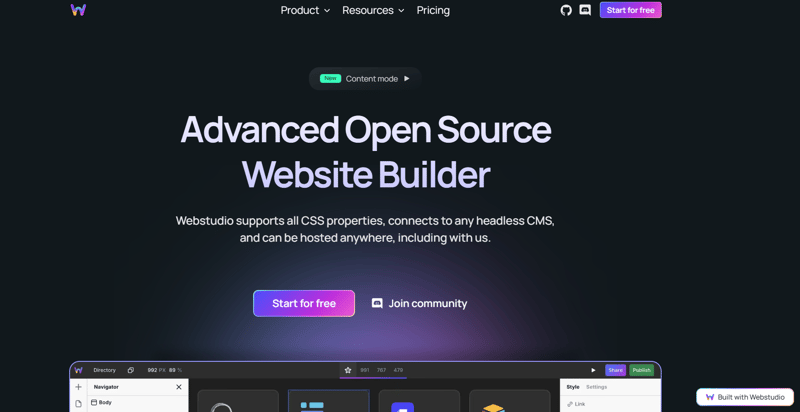Why choose Webstudio:
- No-code visual editor with advanced functionality
- Complete design flexibility for creative freedom
- Fully open-source and customizable
- Real-time collaboration for team projects
- Exportable, clean HTML, CSS, and JS code
👩💻 GitHub | ⭐ 4.8K stars | 💻 Website link
2.Pocketbase
Category: Backend Solution
Open Source Alternative to: Firebase
Pocketbase is a lightweight, open-source backend platform that simplifies app development with built-in authentication, real-time database features, and file storage.
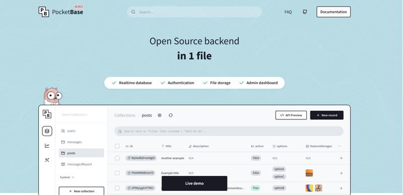Why choose Pocketbaase:
- Easy-to-use authentication and user management
- Real-time database with a responsive API
- Lightweight and extremely fast setup
- Self-hosted for complete control
- No-code admin interface for seamless management
👩💻 GitHub | ⭐ 39.7K stars | 💻 Website link
3.Spree
Category: Selling Platform
Open Source Alternative to: Shopify
Spree is an open-source e-commerce framework powered by Ruby on Rails, offering high customizability and scalability for businesses of all sizes.
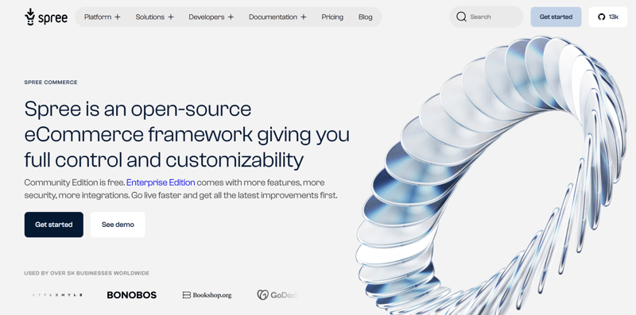Why choose Spree:
- Fully customizable to suit your brand
- Scalable for businesses ranging from startups to enterprises
- Extensive ecosystem with add-ons and extensions
- Multi-language and multi-currency support
- Self-hosted for complete data ownership
👩💻 GitHub | ⭐ 12.9K stars | 💻 Website link
4-Rowy
Category: No-code Database
Open Source Alternative to: Airtable
Rowy blends the simplicity of spreadsheets with the robustness of real-time databases. It offers an intuitive interface for managing Firestore data, making backend management accessible to all.
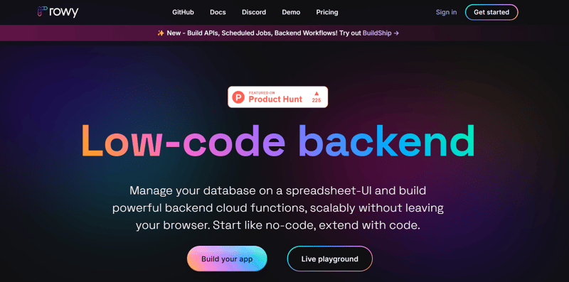Why choose Rowy:
- Familiar spreadsheet-like interface
- Integrated seamlessly with Firebase
- Automated workflows and serverless functions
- Scalable, secure, and developer-friendly
- Open-source and fully customizable
👩💻 GitHub | ⭐ 12.9K stars | 💻 Website link
5.Notesnook
Category: Note-taking
Open Source Alternative to: Evernote
Notesnook is an encrypted, privacy-focused note-taking app that syncs across devices, providing secure and accessible note management.
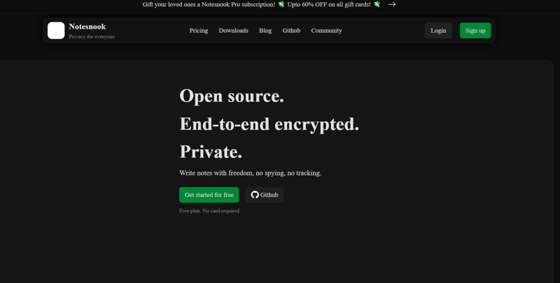Why choose Notesnook:
- End-to-end encryption
- Cross-platform syncing
- Offline access
- Markdown support
- Open-source and customizable
👩💻 GitHub | ⭐ 9.7K stars | 💻 Website link
6.Zulip
Category: Communication
Open Source Alternative to: Slack, Microsoft Teams
Zulip offers threaded, topic-based conversations for organized team communication.
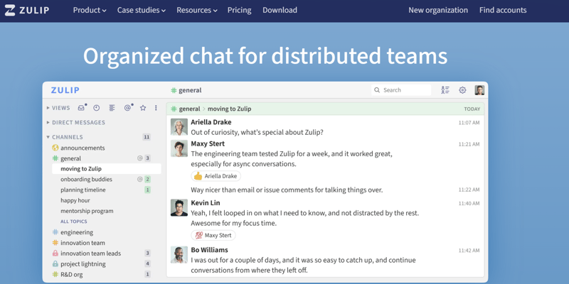Why choose Zulip:
- Topic-based threading for better focus
- API integrations and robust customizations
- Self-hosted option for full control
- Enterprise-grade security
- Active community support
👩💻 GitHub | ⭐ 21.4K stars | 💻 Website link
7.Focalboard
Category: Project Management
Open Source Alternative to: Trello, Asana
Focalboard improves team collaboration with Kanban-style task boards and customizable workflows.
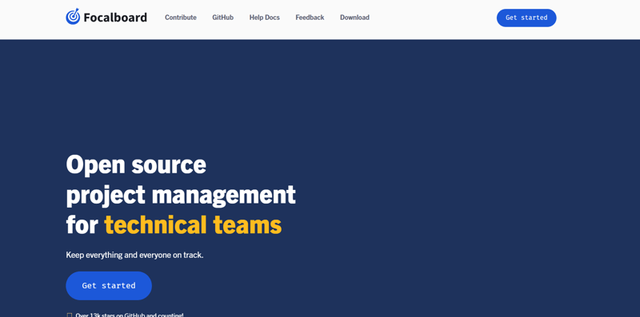Why choose Focalboard:
- Kanban-style visual management
- Self-hosted and cloud options
- CIntegrates seamlessly with Mattermost
- Fully customizable workflows
- Cross-platform support
👩💻 GitHub | ⭐ 21.7K stars | 💻 Website link
8.Outline
Category: Knowledge Base
Open Source Alternative to: Notion
Outline helps teams document and manage shared knowledge seamlessly.
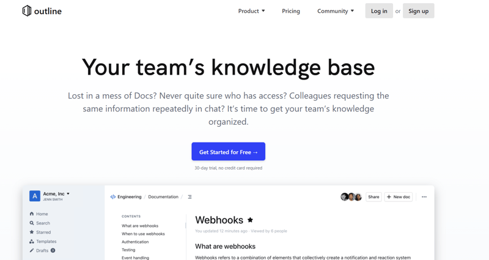Why choose Outline:
- Simple, intuitive UI
- Real-time collaboration
- Powerful search and organization tools
- Markdown support
- Self-hosted or cloud deployment options
👩💻 GitHub | ⭐ 27.8K stars | 💻 Website link
9.Sonic
Category: Search Solution
Open Source Alternative to: Elasticsearch
Sonic offers fast, real-time full-text search without the overhead of larger solutions.
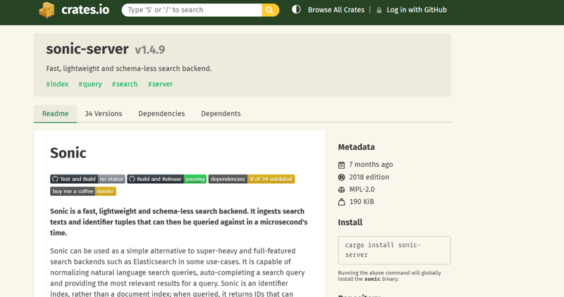Why choose Sonic:
- Lightweight and fast
- Schema-less design
- Low resource consumption
- Real-time indexing
- Easy application integration
👩💻 GitHub | ⭐ 19.9K stars | 💻 Website link
10.Fathom
Category: Analytics
Open Source Alternative to: Google Analytics
Fathom provides lightweight, privacy-focused analytics for your website while staying GDPR-compliant.
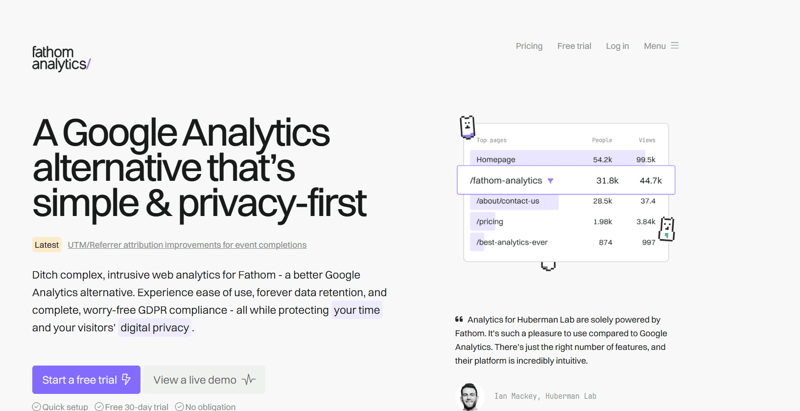Why choose Fathom:
- Privacy-focused and GDPR compliant
- Simple, clear reports
- Lightweight and fast
- Self-hosting support
- No cookies required
👩💻 GitHub | ⭐ 7.5K stars | 💻 Website link
11.Kuma
Category: Monitoring
Open Source Alternative to: Uptime Robot
Kuma is a lightweight monitoring tool with real-time alerts and flexible notification options.
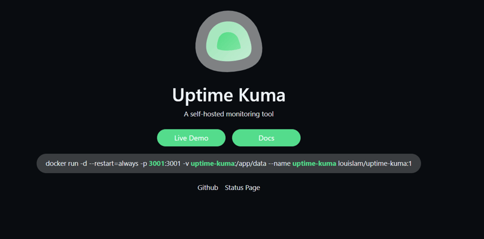Why choose Kuma:
- Real-time monitoring and alerts
- Customizable status page
- Supports multiple notification methods
- Lightweight and efficient
👩💻 GitHub | ⭐ 57.6K stars | 💻 Website link
12.Fider
Category: Feature Voting
Open Source Alternative to: Canny
Fider helps you prioritize product features with user-submitted suggestions and voting.
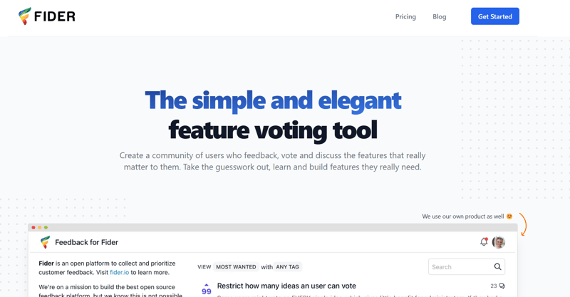Why choose Fider:
- Intuitive voting-based feedback system
- Self-hosted option
- Fully customizable and easy integration
👩💻 GitHub | ⭐ 2.9K stars | 💻 Website link
13.Rally
Category: Meetup Scheduler
Open Source Alternative to: Doodle
Rallly simplifies group scheduling by allowing polls for time coordination.
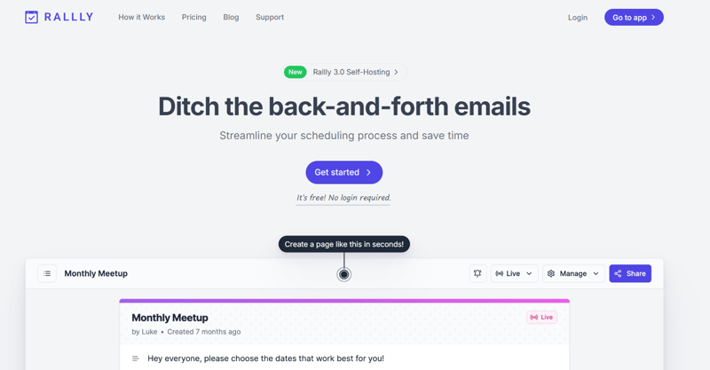Why choose Rally:
- Intuitive polling system
- Privacy-focused
- Real-time updates
- Customizable features
👩💻 GitHub | ⭐ 3.5K stars | 💻 Website link
14.Flarum
Category: Community Building
Open Source Alternative to: Tribe, Circle
Flarum helps you build and manage online communities with a modern, extensible forum solution.
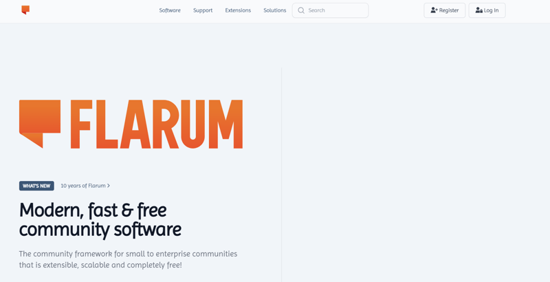Why choose Flarum:
- Modern interface with mobile support
- Lightweight and fast
- Highly extensible with plugins
👩💻 GitHub | ⭐ 6.3K stars | 💻 Website link
15.Activitywatch
Category: Time Tracking
Open Source Alternative to: RescueTime
ActivityWatch tracks your activities to provide insights and improve productivity.
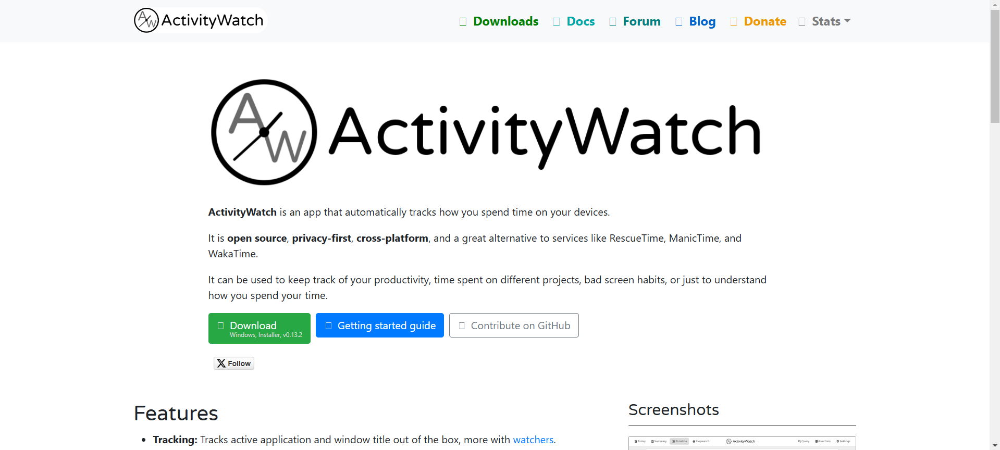Why choose Activitywatch:
- Real-time activity tracking
- Privacy-focused and self-hosted
- Extensible with plugins
- Cross-platform compatibility
👩💻 GitHub | ⭐ 12.1K stars | 💻 Website link
Now is the perfect time to take charge of your digital ecosystem. Explore these alternatives, support open-source projects, and unlock endless potential for personal and professional growth! 🚀
💡 Got questions, feedback, or additional tools to suggest? Let us know in the comments! Don't forget to follow for more insightful guides and resources on DevOps, cloud computing, and beyond. Thank you for joining us on this journey into the open-source world! 💚